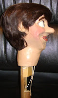

This fellow I know!
6/23/2011
{kind=link}
{kind=link}

Question: I bought this figure about 40 years ago from a figuremaker in the Los Angeles area, but I don't recall his name. I answered an ad in the Popular Mechanics and went to his house. He had me come back in a week and charged me $100.00. I would appreciate any information you could give me about my figure. MB* * * * *
From Mr. D: Your figure is among the first built by Craig Lovik. I know it is from early in his career of figuremaking for several reasons: 1) The return left eyes; 2) The leather lower lip; 3) The "drop through" style neck; 4) The hands (Lovik's first design); 5) Painted eyes.
Yours is also unique because it is one where Craig was experimenting with the idea of having no lever for opening the mouth. You just squeeze the string with your fingers!
This character was one of the early family of figures he called his "Storyteller" figures. I'm upgrading one of them in my shop now. Craig actually sold hundred's of figures through west coast dealers during the early '70s including Disneyland and many magic shops. It sounds like he even gave you the dealer price!